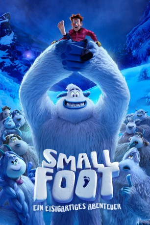

Alternativ: Smallfoot (Englischer Titel) gesehen am 06.01.2019
gesehen am 06.01.2019
 
 IMDB-Wertung: 6.7 / 10
IMDB-Wertung: 6.7 / 10  Metascore:
Metascore: 
Der junge Migo ist ein aufgeweckter, ehrlicher und treuer Yeti, der sein Herz am rechten Fleck trägt. Er hat immer das geglaubt, was ihm in seinem Dorf beigebracht wurde. Doch als er ein Wesen sieht – einen Menschen – das angeblich nicht existiert, wird sein gesamtes Leben und alles, woran er jemals glaubte, auf den Kopf gestellt. Niemand in der Gemeinschaft nimmt Migo seine Entdeckung ab. Lediglich seine Freundin Meechee, die mit ihrer Neugier ständig Erkundungen macht, glaubt ihm. Mit einer Organisation hat sie bereits Beweise dafür gesammelt, dass Menschen, sogenannte „Smallfoods“, existieren. Dennoch begibt sich Migo alleine auf die Suche nach dem gesichteten Menschen, der Percy heißt und bisher die Existenz von Yetis anzweifelte…
Jahr: 2018
Dauer: 96 Minuten
FSK: 0
Land: USA Studio: Warner Bros.Tonspuren: DTS - ,
Untertitel: Deutsch,
Auflösung: 1080p (1920x800) Größe: 5918 MB
Genre: Komödie, Abenteuer, Fantasy, Animation/Trick, Familie, Musical
Regisseur: Karey Kirkpatrick, Jason Reisig
Drehbuch: Karey Kirkpatrick, Clare Sera, John Requa, Glenn Ficarra, Karey Kirkpatrick
Soundtrack: Heitor Pereira
Darsteller:
Datei: X:\Kinder Filme (N-Z)\Smallfoot Ein Eisigartiges Abenteuer (2018, FSK0, 1920x800) 3D.mkv seit 27.12.2018
Festplatte: Kinder-Filme+Trick
 Es gibt insgesamt 87 Filme in der Gruppe 'Kinder Filme (N-Z)'
Es gibt insgesamt 87 Filme in der Gruppe 'Kinder Filme (N-Z)'